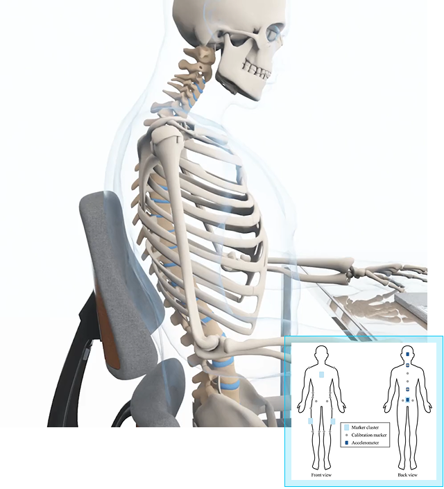

Upper Back Alignment
Less thoracic flexion, more postural stability
One of the most significant findings from the University of Waterloo Spine Biomechanics Lab was the effect of the Anthros dual-back system on thoracic spine posture — the critical upper segment that determines how upright or slouched a person appears while seated.

A More Upright Spine
Participants sitting in the Anthros chair exhibited 3.9° to 5.6° less thoracic spine
flexion than when sitting in a leading ergonomic competitor (Embody).
This means the Anthros chair helped users maintain a more upright, naturally stacked
upper spine — reducing the rounded “hunched” posture that often develops during prolonged
sitting.
The differences were:
-
Consistent across all users (both male and female)
-
Sustained over time, even after an hour of seated work
-
Most pronounced during reading tasks, where the Anthros upper back support reduced thoracic flexion the most (p < 0.001)
“Participants demonstrated an average 3.9°–5.6° less flexion of the thoracic spine when seated in Anthros compared to Gaming Embody… indicating that Anthros promotes a more upright and supported upper back posture during sitting.”
— University of Waterloo Report, 2025
How the Design Enables It
The Anthros two-part back is what prevents the upper back flexion. With the pelvis supported in neutral, the spine is brought into its natural curves. The hinged and tapered upper back support keeps users in contact with the backrest and provides balanced support at all times.
This design:
-

Prevents upper trunk collapse.
-
Distributes load across the thoracic area without impeding shoulder movement.
-
Encourages active alignment from pelvis to shoulders.
Together with the lower pelvic support, this creates a kinetic chain of alignment — stabilizing the pelvis, aligning the lumbar curve, and reducing thoracic rounding.

Whole-Spine Optimization
When considered alongside the lumbar and pelvis results:
-
Pelvis control reduced posterior tilt by up to 4.2° in females
-
Thoracic flexion decreased by up to 5.6°
-
Disc pressure dropped to 0.5 MPa (upright) and 0.3 MPa (tilt)
These combined effects form a whole-spine posture correction — maintaining mid-range motion, lowering compressive forces, and allowing the body to sit closer to its natural standing alignment even in prolonged sitting.

Designed For Every Body
Unlike rigid lumbar pads or single plane backs, this system accommodates the full range of human variation:
-
Adjusts to short and long torsos (5th percentile female to 95th percentile male).
-
Aligns with individual pelvis landmarks.
-
Prevents uneven pressure or over-correction.
Every adjustment is designed to meet your body where it is — and bring it back into healthy alignment.
By reducing passive tissue strain, disc deformation, and end-range spinal loading, it helps preserve long-term spinal integrity.
SCIENCE YOU
CAN SIT ON
This isn’t comfort marketing — it’s biomechanics in action.
Independent university testing and 3D human modeling confirm that the Precision Posture System offers benefits for:
-
Office professionals working long hours at a desk.
-
Gamers seeking posture endurance and reduced fatigue.
-
Long sitters managing spinal conditions.
-
Pain sufferers who have to sit all day.
It’s not just a better chair design, it’s a redefinition of how we support the human body in sitting.